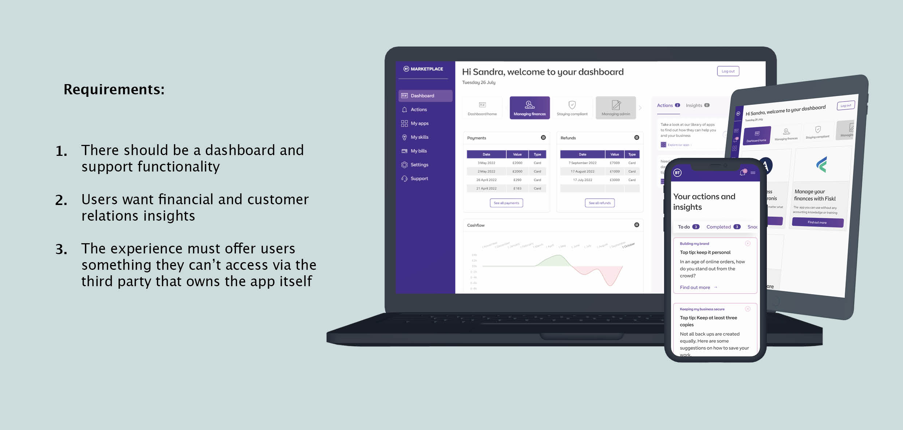

DATE
Oct 2022
ROLE
UX/UI designer
TOOLKIT
Figma/Mural
Business in a Box is a new product that supports SME business owners who want to digitise their business but aren’t confident they have the skills and tools to do so.
Business in a Box offers users a curated marketplace, a dashboard with data and online learning. Create an alternative interpretation of what the product could be when it goes beyond just showcasing widgets from different applications in one space.
User research, a competitor analysis and an in-depth assessment of the BiaB MVP, made me realise that where the product can differentiate from competitors is by presenting all single-story widgets as one bigger story in a visualisation. With the help of the solution architect in my squad I came up with some potential stories of that kind.
I then enrolled in the Information Visualisation course offered by the Interaction Design Foundation to broaden my understanding of visualisation. A quote by Edward Tufte especially resonated with me:
“Graphical excellence is that which gives to the viewer the greatest number of ideas in the shortest time with the least ink in the smallest space.”
During my research, I identified two major user needs in relation to managing finances: having insight in the companies’ cashflow and keeping track of invoices. After a couple of iterations of low fidelity designs, I decided to the develop the concept that was received best in greater detail.
Another user need I identified in research was that business owners want to find out quickly which outstanding invoices to prioritise. They cited amount, time and customer reputation as reasons for prioritisation.
Research showed us that users like having an overview of how the customer base of their business develops over time and would like to know how individual customers interact with them.
During my design process I tested the concepts I came up with on various colleagues to see if the ‘story’ the designs were trying to tell came across. I also reached out to devs to make sure that the proposed widgets could in theory be created based on the information disclosed in the APIs we work with.
Finally, I presented the concepts to stakeholders a few times and kept iterating until they were happy with the work. The next step would be to test the concepts with users.